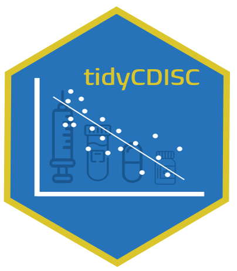
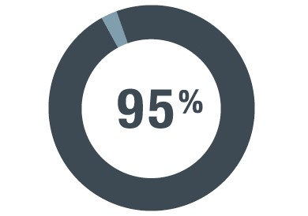

tidyCDISC 
tidyCDISC is a shiny app to easily create custom tables and figures from ADaM-ish data sets.
Purpose
One of tidyCDISC‘s goals is to develop clinical tables that meet table standards leveraged for submission filings, called ’standard analyses’. However, this is secondary to the app’s primary purpose: providing rich exploratory capabilities for clinical studies. High-level features of the app allow users to produce customized tables using a point-and-click interface, examine trends in patient populations with dynamic figures, and supply visualizations that narrow in on single patient profile.
The beauty of this application is that the user doesn’t have to write a lick of code to gather abundant insights from the study data, so it aims to serve a large population of clinical personnel with varying levels of programming experience. For example:
A clinical head, with presumably no programming skills but the most domain expertise, can explore results without asking a statistician or programmer to build tables & figures.
A statistician can use the application to make tables/figures instantly, cutting down on statistical programming requests for excess tables that aren’t required, but just “nice to see”.

- A statistical programmer can use
tidyCDISCto perform preliminary QC programming prior to writing code in a validated process. Users who’ve leveragetidyCDISCfor routine trial analysis tend to report significant time savings, about 95%, when performing programming duties.
For a high-level overview of the app with 10-minute demo, please review the following conference presentation on tidyCDISCat R/Medicine 2020:

Scope
As previously mentioned, tidyCDISC can only accept data sets that conform to CDISC ADaM standards with some minor flexibility (see upload requirements for more details). At this time, the app only accepts sas7bdat files.
If you’re looking to regularly generate R code for tables, the tidyCDISC app has a built-in export feature that downloads an R script to reproduce any analysis performed in the app.
Usage
tidyCDISC is primarily a web application, so no installation is necessary. Simply start using the demo version of the app here: tidyCDISC. Note the demo version disables the Data Upload feature and instead uses the CDISC pilot data. If you’d like to upload your own study data, we recommend installing tidyCDISC (using the instructions below) to run the app locally or deploy in your preferred environment. Please review the “Get Started” guide to follow an example use case with the app. However, to optimize one’s use of tidyCDISC, we highly recommend reading the following articles that take a deeper look into the topics presented in the ‘get started’ tutorial:
We’re confident the tidyCDISC application can save you time. If there is some use case that tidyCDISC can’t solve, we want to know about it. Please send the developers a message with your question or request!
Install the tidyCDISC R package
tidyCDISC is primarily an application, so no installation is necessary. Simply start using the demo version of the app here: tidyCDISC. However, if you choose to upload your own study data OR export & run R code from the Table Generator, you will need the tidyCDISC package installed on your machine locally. Execute the following code to install the package to your local machine:
remotes::install_github("Biogen-Inc/tidyCDISC")With a simple library(tidyCDISC) you can access all the exported functions from tidyCDISC that help users reproduce analysis performed in the app. Using the dev/run_dev.R file, you can even run the application locally:
# Set options here
options(golem.app.prod = FALSE) # TRUE = production mode, FALSE = development mode
# Detach all loaded packages and clean your environment
golem::detach_all_attached()
# Document and reload your package, which runs these three functions...
golem::document_and_reload()
# Run the application
tidyCDISC::run_app()Happy exploring!